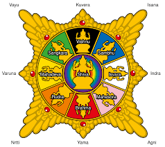
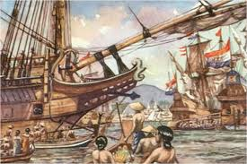

Surya Majapahit - Simbol Kerajaan Majapahit
KERAJAAN MAJAPAHIT
Kemaharajaan Terbesar di Nusantara (1293–1527 M)

Sejarah Singkat

Kerajaan Majapahit merupakan salah satu kerajaan Hindu-Buddha terbesar dan terkuat yang pernah ada dalam sejarah Indonesia. Didirikan pada tahun 1293 M oleh Raden Wijaya, kerajaan ini berlokasi di lembah Sungai Brantas, yang ibu kotanya diperkirakan berada di Trowulan, Mojokerto, Jawa Timur. Nama "Majapahit" sendiri berasal dari dua kata, yaitu "Maja" yang berarti buah maja dan "Pahit", karena konon prajurit Raden Wijaya merasakan pahitnya buah tersebut saat membuka hutan di sana.
Meskipun sering dilanda pemberontakan pada masa awal berdiri, Majapahit berhasil melewati masa-masa sulit, terutama pada masa pemerintahan Ratu Tribhuwana Tunggadewi, berkat kehebatan Mahapatih Gajah Mada. Kerajaan ini kemudian mencapai masa keemasan di bawah pimpinan Raja Hayam Wuruk dan Gajah Mada, menguasai wilayah yang membentang dari Sumatera hingga Filipina, menjadikannya sebuah kemaharajaan yang disegani di Asia Tenggara.
Pendiri Kerajaan
Pendiri sekaligus raja pertama Kerajaan Majapahit adalah **Raden Wijaya** (memerintah 1293–1309 M), yang memiliki gelar lengkap *Nararya Sanggramawijaya Sri Maharaja Kertarajasa Jayawardhana*. Raden Wijaya adalah menantu dari Raja terakhir Kerajaan Singasari, Kertanegara.
Setelah kematian Kertanegara akibat pemberontakan Jayakatwang, Raden Wijaya melarikan diri dan, dengan bantuan Arya Wiraraja, ia kemudian berpura-pura menyerah kepada Jayakatwang. Dengan memanfaatkan kedatangan tentara Mongol yang ingin menyerang Jawa, Raden Wijaya berbalik menyerang Jayakatwang. Setelah berhasil mengalahkan Jayakatwang dan mengusir tentara Mongol, Raden Wijaya mendirikan kerajaan baru di wilayah Tarik (Trowulan) dan menobatkannya sebagai Majapahit pada tahun 1293 M.
Puncak Kejayaan

Majapahit mencapai puncak kejayaannya pada masa pemerintahan **Raja Hayam Wuruk** (berkuasa 1350–1389 M) yang bergelar *Sri Rajasanagara*, didampingi oleh Mahapatih yang legendaris, **Gajah Mada**. Masa ini dikenal sebagai *Masa Keemasan* Majapahit.
Pada masa ini, Sumpah Palapa yang diucapkan Gajah Mada berhasil direalisasikan, membuat wilayah kekuasaan Majapahit meluas mencakup hampir seluruh wilayah Nusantara dan bahkan pengaruhnya sampai ke negara-negara tetangga. Selain ekspansi wilayah, Majapahit juga menjadi pusat perdagangan yang makmur dan dikenal dengan karya sastranya, seperti *Kakawin Nagarakertagama* yang ditulis oleh Mpu Prapanca, yang menguraikan wilayah bawahan Majapahit yang sangat luas.